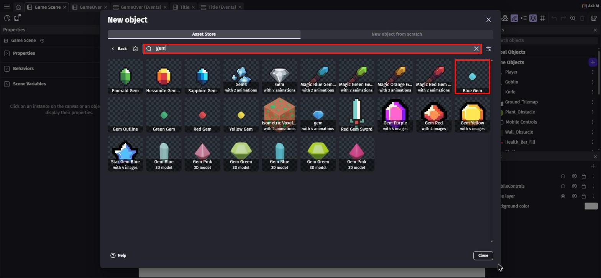
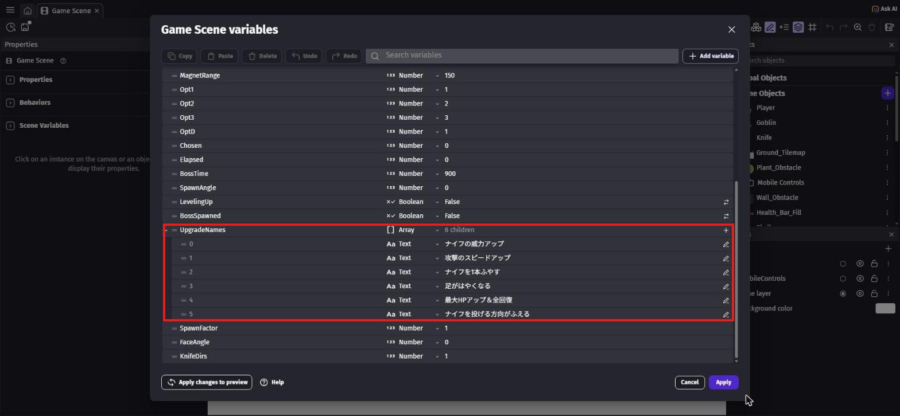
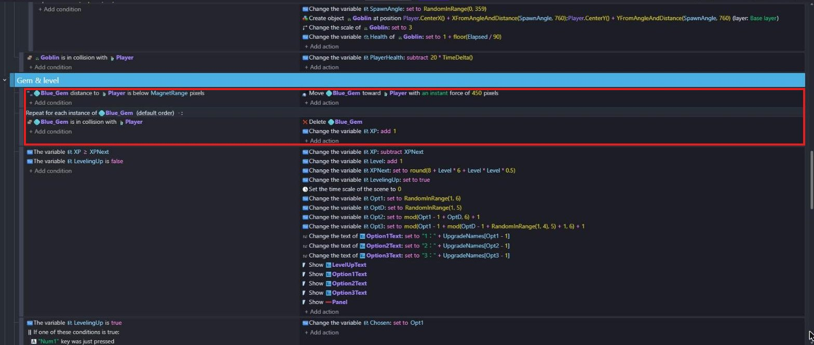
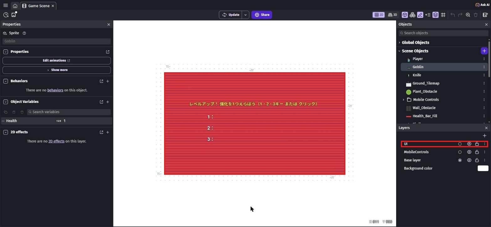
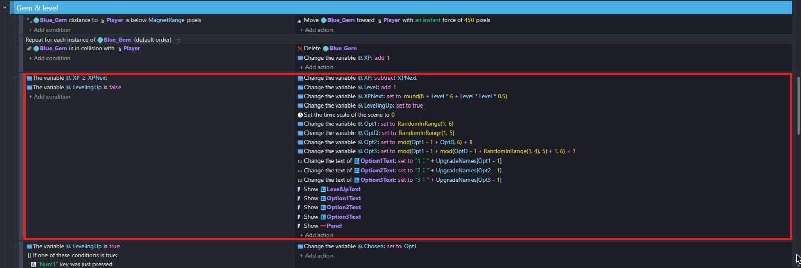
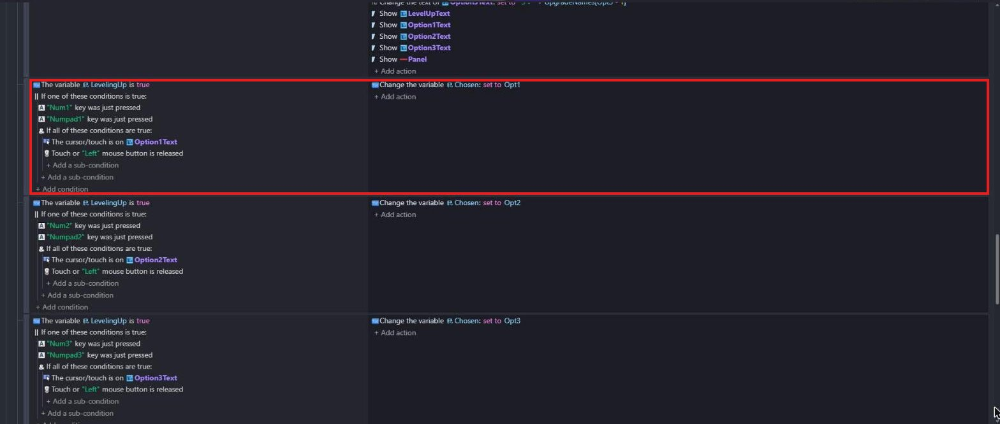
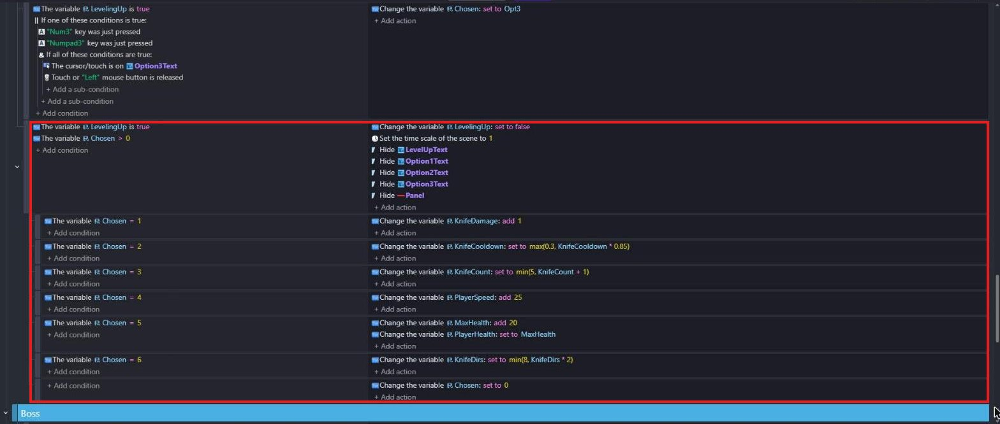
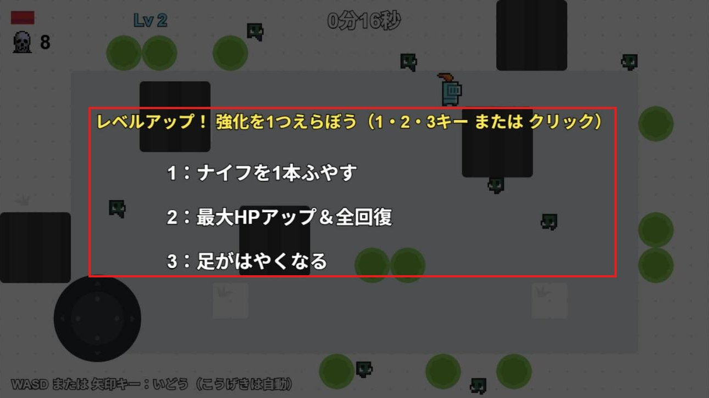

ジェムを集めてレベルアップ
🎯 この章でできるようになること
- たおした敵の場所にジェムを落とし、近づくと吸いよせて拾える
- 配列の変数に、文字をいくつもまとめて入れられる
- タイムスケールで、ゲームの時間を止めたり動かしたりできる
- 「If one of these conditions is true」で、キーでもクリックでも選べるようにできる
4-1. この章で作るしくみ
時間を止めて、強化の候補を3つ出す
4-2. ジェムを落とそう
「Game Scene」のタブで、「Objects」の「＋」からアセットストアを開きます。
検索欄に gem と入れて、「Blue Gem」（作者: Kenney）を選んで追加します。
オブジェクト名は Blue_Gem になります。
ジェムもイベントで作り出すので、シーンには置かなくてOK。

gem で検索して、右上の「Blue Gem」（赤枠）「Game Scene (Events)」の Enemy グループで、第3章で作った「Repeat for each instance of Goblin」のイベントにアクションを2つ足します。
- 「Create an object」で
Blue_Gemを XGoblin.CenterX()、YGoblin.CenterY()に作る - 「Scale」で
Blue_Gemを1.2
足した2つは、ドラッグして「Delete Goblin」より上に動かします。
先にゴブリンを消してしまうと、ゴブリンの場所がわからなくなるからです。

「Game Scene variables」の画面を開き、次の変数を足して「Apply」を押します。
| 名前 | 型 | 値 | 意味 |
|---|---|---|---|
XP | Number | 0 | 集めたジェム（経験値） |
XPNext | Number | 8 | 次のレベルまでに必要な XP |
Level | Number | 1 | 今のレベル |
MagnetRange | Number | 150 | ジェムを吸いよせる距離 |
PlayerSpeed | Number | 300 | 騎士の速さ |
Opt1・Opt2・Opt3 | Number | 1・2・3 | 画面に出す強化の番号 |
OptD | Number | 1 | 強化の番号をえらぶための計算用 |
Chosen | Number | 0 | えらんだ強化の番号（0 はまだえらんでいない） |
UpgradeNames | Array | （下の6つ） | 強化の名前の一覧 |
UpgradeNames は、型を「Array」にします。
行の右の「＋」を6回押すと、0〜5 の番号の「子」ができます。
子の型をそれぞれ「Text」にして、次の文字を入れます。
| 番号 | テキスト |
|---|---|
| 0 | ナイフの威力アップ |
| 1 | 攻撃のスピードアップ |
| 2 | ナイフを1本ふやす |
| 3 | 足がはやくなる |
| 4 | 最大HPアップ＆全回復 |
| 5 | ナイフを投げる方向がふえる |

番号は 0 から始まります。
UpgradeNames[2] と書くと、2番の「ナイフを1本ふやす」が取り出せます。
4-3. ジェムを拾おう
Enemy グループの下に、新しいグループ Gem & level を作ります。
その中に、イベントを2つ作ります。
1つ目（吸いよせる）
条件は、左の一覧で Blue_Gem を選び、「Distance between two objects」、Object 2 は Player、Distance は MagnetRange（こんどは反転しない）。
アクションは「Add a force to move toward an object」で Blue_Gem を Player へ、Speed 450、「Instant」。
2つ目（拾う）
右クリック →「Add」→「For each object」で、Object は Blue_Gem。
条件は「Collision」で Blue_Gem と Player。
アクションは「Delete the object」で Blue_Gem、「Change variable value」で XP を「+ (add)」1。

ジェムを1つずつ拾うので、ここでも「For each object」を使います。
いっぺんに2つさわっても、XP がちゃんと2ふえます。
4-4. XP バーとレベルを出そう
「Game Scene」のタブで、一覧の Health_Bar_Fill の「⋮」→「Duplicate」を選びます。
できたオブジェクトの「⋮」→「Rename」で、名前を XP_Bar_Fill にします。
レイヤーの UI の丸いボタンを押してから、XP_Bar_Fill をステージに置き、X 0、Y 0、W 1280、H 10 にします。
画面のいちばん上の、うすいバーになります。
次に、「＋」→「New object from scratch」→「Text」で LevelText を作ります。
Initial text to display は Lv 1。
サイズや色は KillText と同じくらいで、好きな色（写真では水色）にしてOK。
UI レイヤーの、体力バーの右（X 240、Y 16 くらい）に置きます。
「Game Scene (Events)」の UI グループで、条件のないイベントにアクションを2つ足します。
- 「Width」で
XP_Bar_Fillを「= (set to)」XP / XPNext * 1280 LevelTextの「Text」で「= (set to)」"Lv " + ToString(Level)
Start グループの「At the beginning of the scene」には、「Tint color」で XP_Bar_Fill を "80;200;255"（水色）を足します。
Health_Bar_Fill を複製したので、そのままだと赤いバーだからです。
「次のレベルまで何わり集まったか」に、画面の横はば 1280 をかけています。
ジェムを集めるほど、バーが右へのびていきます。
"Lv " + ToString(Level) は、「Lv 」という文字と、レベルの数をつなげて「Lv 2」のようにします。
4-5. レベルアップの画面を作ろう
もう一度 Health_Bar_Fill を「Duplicate」して、名前を Panel にします。
UI レイヤーに置いて、X 0、Y 0、W 1280、H 720（画面全体）にします。
エディタでは赤いしましまですが、ゲームが始まったら黒くて半分すけたパネルにします。
「Text」で、次の4つを作って UI レイヤーのパネルの上に置きます。
| 名前 | Initial text to display | 置く場所（だいたいでOK） |
|---|---|---|
LevelUpText | レベルアップ！ 強化を1つえらぼう（1・2・3キー または クリック） | 上のほう、まん中（黄色が見やすい） |
Option1Text | 1： | X 300、Y 290 |
Option2Text | 2： | X 300、Y 370 |
Option3Text | 3： | X 300、Y 450 |
Option1Text〜3 の文字は、あとでイベントで「1：ナイフを1本ふやす」のように書きかえます。
文字がパネルにかくれてしまうときは、Panel をクリックして Z を 0 に、文字の Z を 100 にしよう（Z が大きいほど手前に出ます）。
置き終わったら、Base layer の丸いボタンを押してもどしておこう。

Start グループの「At the beginning of the scene」に、アクションを足します。
hideで検索 →「Hide」でPanel、LevelUpText、Option1Text、Option2Text、Option3Text（5つ）- 「Tint color」で
Panelを"0;0;0"（黒） opacityで検索 →「Opacity」でPanelを「= (set to)」170（0 で透明、255 で不透明）
4-6. レベルアップのしくみを作ろう
Gem & level グループに新しいイベントを作ります。
条件は2つです。
- 「Variable value」で
XPが「≥ (greater or equal to)」XPNext - 「Variable value」で
LevelingUpが「False」
アクションは、上から順番に次のとおりです。
| アクション | 中身 |
|---|---|
| Change variable value | XP を「- (subtract)」XPNext |
| Change variable value | Level を「+ (add)」1 |
| Change variable value | XPNext を「= (set to)」round(8 + Level * 6 + Level * Level * 0.5) |
| Change variable value | LevelingUp を「True」に設定 |
time scale で検索 →「Time scale」 | 0 |
| Change variable value | Opt1 を「= (set to)」RandomInRange(1, 6) |
| Change variable value | OptD を「= (set to)」RandomInRange(1, 5) |
| Change variable value | Opt2 を「= (set to)」下の式 |
| Change variable value | Opt3 を「= (set to)」下の式 |
| Text | Option1Text を「= (set to)」"1：" + UpgradeNames[Opt1 - 1] |
| Text | Option2Text を「= (set to)」"2：" + UpgradeNames[Opt2 - 1] |
| Text | Option3Text を「= (set to)」"3：" + UpgradeNames[Opt3 - 1] |
show で検索 →「Show」 | LevelUpText、Option1Text、Option2Text、Option3Text、Panel（5つ） |
mod(Opt1 - 1 + OptD, 6) + 1mod(Opt1 - 1 + mod(OptD - 1 + RandomInRange(1, 4), 5) + 1, 6) + 1
1 がふつう、0 にすると時間が止まります。
ゴブリンもナイフもタイマーも止まるので、ゆっくり強化をえらべます。
LevelingUp を True にしておくのは、「今はレベルアップ中」という目じるしです。
ナイフやゴブリンを出すイベントに「LevelingUp が False」の条件を入れておいたのは、このためです。
Opt1 はふつうにランダム。
Opt2 は、Opt1 から OptD（1〜5）だけずらした番号です。
mod(…, 6) は「6 で割ったあまり」で、6 をこえたら 1 にもどって数えるはたらきをします。
Opt3 は、OptD とはちがう量だけずらすので、Opt1 とも Opt2 ともかぶりません。
配列の番号は 0 から始まるので、
UpgradeNames[Opt1 - 1] のように 1 を引いて取り出します。
Level が 2 なら 8 + 12 + 2 ＝ 22、Level が 3 なら 8 + 18 + 4.5 ≒ 31 のように、レベルが上がるほど次に必要なジェムがふえていきます。
新しいイベントを作ります。
1つ目の条件は「Variable value」で LevelingUp が「True」。
2つ目の条件は、検索欄に or と入れて、「Or」の条件（Advanced › Events and control flow）を選びます。
イベントシートには「If one of these conditions is true:」と表示されます。
その中の「Add a sub-condition」で、次の3つを入れます。
key just pressedで検索 →「Key just pressed」でNum1（キーボードの上の 1）- 「Key just pressed」で
Numpad1（テンキーの 1） andで検索 →「And」の条件（シートでは「If all of these conditions are true:」）。
その中の「Add a sub-condition」で、左の一覧のOption1Textの「The cursor/touch is on an object」と、mouse button releasedで検索 →「Mouse button released」（ボタンは Left）
アクションは「Change variable value」で Chosen を「= (set to)」Opt1。

その下に、2番・3番のイベントもならんでいます
このイベントを右クリック →「Copy」→「Paste」で2つふやし、2番・3番用に直します。
Num1→Num2、Numpad1→Numpad2、Option1Text→Option2Text、Opt1→Opt2 のように、数字を全部かえるのを忘れずに。
「If all of these conditions are true」（And）は、中の条件が全部当てはまらないとダメ。
だから「1キー」か「テンキーの1」か「（Option1Text の上で）かつ（クリックをはなした）」のどれかで、1番がえらばれます。
「Key pressed」ではなく「Key just pressed」を使うのは、1回押したら1回だけえらぶためです。
新しいイベントを作ります。
条件は「Variable value」で LevelingUp が「True」、「Variable value」で Chosen が「> (greater than)」0。
アクションは次のとおりです。
- 「Change variable value」で
LevelingUpを「False」に設定 - 「Time scale」を
1（時間を動かす） - 「Hide」で
LevelUpText、Option1Text、Option2Text、Option3Text、Panel
次に、このイベントを右クリック →「Add」→「Sub Event」で、中にイベントを7つ作ります。
| サブイベントの条件（Variable value） | アクション（Change variable value） | 強化 |
|---|---|---|
Chosen ＝ 1 | KnifeDamage を「+ (add)」1 | ナイフの威力アップ |
Chosen ＝ 2 | KnifeCooldown を「= (set to)」max(0.3, KnifeCooldown * 0.85) | 攻撃のスピードアップ |
Chosen ＝ 3 | KnifeCount を「= (set to)」min(5, KnifeCount + 1) | ナイフを1本ふやす |
Chosen ＝ 4 | PlayerSpeed を「+ (add)」25 | 足がはやくなる |
Chosen ＝ 5 | MaxHealth を「+ (add)」20、PlayerHealth を「= (set to)」MaxHealth | 最大HPアップ＆全回復 |
Chosen ＝ 6 | KnifeDirs を「= (set to)」min(8, KnifeDirs * 2) | ナイフを投げる方向がふえる |
| （条件なし） | Chosen を「= (set to)」0 | えらんだ番号をもどす |

いちばん下が「Chosen を 0 に」のサブイベントです
攻撃のスピードは 0.85 倍ずつ速くなりますが、0.3 秒より速くはなりません。
ナイフは5本まで、方向は 1→2→4→8 と倍になって、8方向までです。
最後に Chosen を 0 にもどすのは、次のレベルアップまでこのイベントが動かないようにするためです。
Player グループに、条件のないイベントを作ります。
アクションは、左の一覧で Player を選び、「Maximum speed」（TOP-DOWN CONFIGURATION のもの）で「= (set to)」PlayerSpeed。
イベントシートには「Change the max. speed of Player: set to PlayerSpeed」と表示されます。
これで「足がはやくなる」をえらぶと、騎士が速くなります。
ゴブリンをたおすと、青いジェムが落ちます。
近づくとジェムが吸いよせられ、拾うと画面の上の水色のバーがのびます。
バーがいっぱいになると時間が止まり、強化の候補が3つ出てきます。
1・2・3キーかクリックでえらぶと、ゲームが動き出して、えらんだ強化が効けば成功！

上の時間（第5章）と下の説明文（第6章）は、まだ出ていなくて大丈夫です
💪 やってみよう
MagnetRange を大きくしたり、XPNext の式の数を変えたりして、レベルアップのペースを調整してみよう。
よゆうがある人は、7つ目の強化を考えてみよう。
ヒント
7つ目をふやすときは、UpgradeNames に6番の子を足し、Opt の式の 6 を 7 に、5 を 6 に、4 を 5 に変えます。
そして、反映のイベントに「Chosen ＝ 7」のサブイベントを足そう。
たとえば「MagnetRange を 50 ふやす」（ジェムを遠くから吸いよせる）などがおすすめです。
4-7. 🚨 つまずきポイント集
ジェムが出ない・左上に出る
原因: ジェムを作るアクションが、「Delete Goblin」より下にある。
直し方: Blue_Gem の2行を、「Delete Goblin」より上にドラッグしよう。
レベルアップの画面がずっと出たまま・ゲームが止まったまま
原因1: えらぶイベントの条件が「Key pressed」になっている、またはキーの名前がちがう。
→ 「Key just pressed」で Num1 などになっているか確かめよう。
原因2: 反映のイベントで、タイムスケールを 1 にもどしていない。
→ 「Time scale」を 1 にするアクションがあるか確かめよう。
強化の文字が「1：」のまま、または同じ強化が2つ出る
原因: UpgradeNames の子の型が「Text」になっていない、または Opt の式の写しまちがい。
直し方: 子の型と文字を確かめて、Opt2・Opt3 の式はコピーボタンで写しなおそう。
パネルが赤いまま・まっ黒で何も見えない
原因: Start の「Tint color」や「Opacity」が Panel になっていない、または Opacity が 255。
直し方: Panel の Tint color "0;0;0"、Opacity 170 になっているか確かめよう。
4-8. ✅ チェックリスト
全部チェックできたら第4章クリア！
🎉 次回は、時間がたつほど強くなる敵と、ボスを作るよ。